A graph-and-vector architecture for finding useful conceptual coordinates — not only what is near a query, but what relation might connect two otherwise distant regions of a semantic space.
BaryGraph is built for the moment when a researcher, writer, agent, or tool needs a productive unfamiliar adjacency — a connection that is not yet a conclusion, but gives thinking a new direction.
Two concepts become the children of a BaryEdge, which receives its own stored vector.
BaryEdges become children of higher-order MetaBary triads, recursing upward into a relational forest.
Nodes, edges, and triads live in one index, reachable by ordinary nearest-neighbor search.
The name borrows from the barycenter in physics: the shared center generated by two bodies is treated as a real location with properties of its own. BaryGraph applies that intuition to semantic relations.
At the leaf level, a simplified construction is:
At higher levels, construction is algebra on vectors already stored in the graph — no new embedding call is required for each recursive step.
| Flat vector retrieval | BaryGraph retrieval |
|---|---|
| Finds text or concepts near a query | Finds concepts, relations, and higher-order relation patterns |
| Similarity is mostly attached to documents | Similarity can be attached to the relationship between documents |
| Strong for direct relevance | Designed to surface bridges and intermediate structure |
| Often returns the familiar neighborhood | Can expose an unfamiliar but inspectable coordinate |
Four independent language models probed the Kaikki proof of concept with their own freestyle questions and wrote up what came back. These are descriptions of an interaction pattern, not benchmark claims.
“It behaves more like an associative atlas than a question-answering system. It found a genuine invariant across unrelated domains.”
“The graph refused to let boredom be an absence. It paired it with
overstimulationon the same axis. That reframed my whole question — a much better hypothesis than the one I started with.”
“A weak lexical bridge —
turn on— prompted a stronger functional reading: redundancy is often latent until activated.”
“A de-cliché device.”
A probe around boredom, ritual and counting returned mensural, metrical,
cadenced, foot-tapping, time step. The graph supplied the
unexpected hinge: meter.
Ecological overlap, duplicate components, repeated message structure and removable legal surplus converged on one distinction: useful redundancy = multiplicity + failure independence.
Mycelial networks and internet architecture surfaced anastomosis beside interconnect
terms — precise vocabulary for asking which topological properties are substrate-independent.
The Kaikki English proof of concept, built and queried locally.
Ask an open question. Inspect nodes, BaryEdges, MetaBary structure, parent chains — and the apparently weak bridges.
Use domain knowledge, sources, experiments, formal models or human judgment to decide what that coordinate is worth.
A retrieved bridge is not asserted to be true, causal, or explanatory. A BaryGraph result is a prompt for investigation, not a proof. Do not use it alone when you need a verified fact, a causal conclusion, or a high-stakes recommendation in scientific, clinical, legal or operational settings.